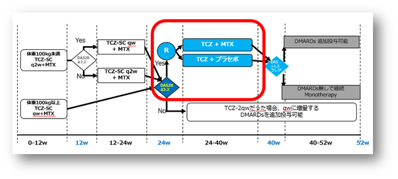

有害事象はMTX中止群よりもMTX継続群の方が多い傾向（COMP-ACT Study）
- ●TCZ-SCとMTX併用で低疾患活動性を達成した患者において、併用療法継続群に対する、MTX中止群の非劣性を検証
- ●主要：TCZ単剤とTCZ＋MTX群の24週から40週のΔDASの比較(非劣性マージン0.6)
- ●副次：40週と52週のDAS28-Rem, LDA及びACR20/50/70の達成率と安全性

| TCZ単剤 (n = 144) 92.44 PY |
TCZ + MTX (n = 130) 90.56 PY |
|
|---|---|---|
| 有害事象 | ||
| No. of adverse events, n | 220 | 279 |
| Patients with ≥ 1, n (%) | 89 (61.8) | 94 (67.6) |
| Events per 100 PY, n (95% CI) | 238.00 (207.58 to 271.61) |
308.07 (272.98 to 346.43) |
| 重篤有害事象 | ||
| No. of serious adverse events, n | 8 | 13 |
| Patients with ≥ 1, n (%) | 6 (4.2) | 8 (5.8) |
| Events per 100 PY, n (95% CI) | 8.65 (3.74 to 17.05) | 14.35 (7.64 to 24.55) |
| 重篤感染症 | ||
| No. of serious infections, n | 3 | 4 |
| Patients with ≥ 1, n (%) | 3 (2.1) | 3 (2.2) |
| Events per 100 PY, n (95% CI) | 3.25 (0.67 to 9.48) |
4.42 (1.20 to 11.31) |
TCZ + MTXは、TCZ-MONOよりAE、SAE及び重篤感染の頻度が高い
ACT-SC+MTXで低疾患活動性を達成した患者ではMTXを中止しても、疾患活動性を維持できる上に、継続群よりも有害事象が少ない傾向にある
J. Kremer, et al. Arthritis Rheumatol. 2018 Mar 25. doi: 10.1002/art.40493. [Epub ahead of print]
Joel Kremer, et al. ACR2017. #1905